Троицко-Урайские вести
Главные события месяца
Хасбик приплыл без матраса и без лодки — сам, своими руками
Местные рыбаки в шоке: легендарный пловец, не меняя выражения лица, пересёк Индийский океан вплавь. Говорят, он искал тишины и покоя, но нашёл только Арса с зип-пакетиком.
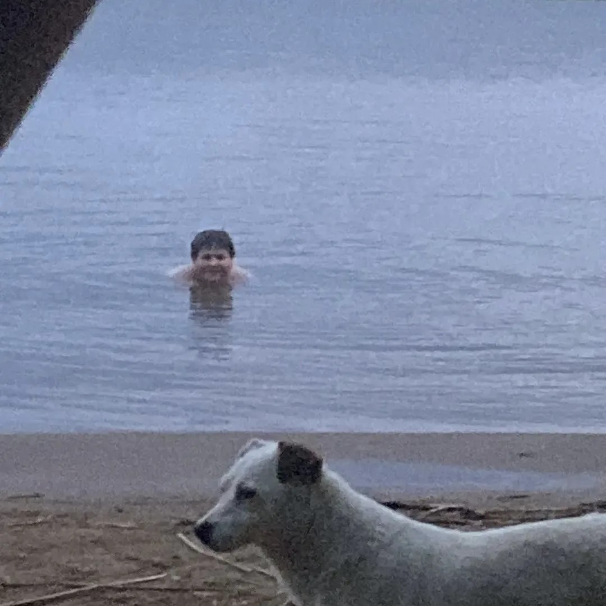
Арс нюхнул свой меф и объявил Мальдивы раем на земле
«Это же Мальдивы, тут надо расслабляться по-взрослому», — заявил Арс, сделав первый вдох. Очевидцы утверждают: после этого он попытался объяснить воздуху теорию струн и назвал его «братом по разуму». Воздух, кстати, не возражал.
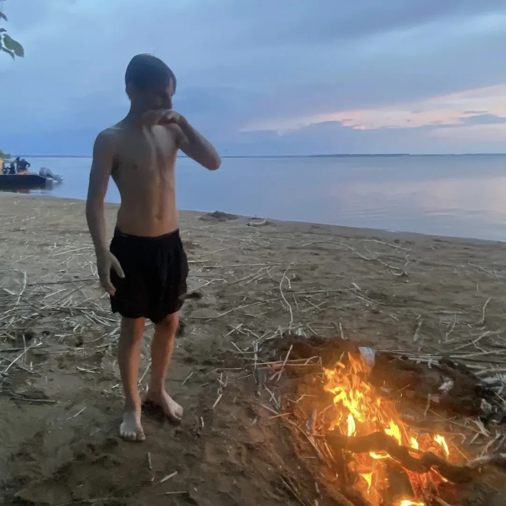
Арс в эйфории знакомит нас с «девушкой своей мечты»
Он держит в руках бревно, гладит его и нежно называет «Мариной». «Мы познакомились на закате», — шепчет Арс, пока бревно молча соглашается. Туристы в ужасе отворачиваются.

Арс устроил археологические раскопки в костре
В припадке паранойи Арс начал выгребать пепел из костра в поисках второго заветного пакетика. «Он точно тут был! Я его помню!» — кричал он, обжигая пальцы и распугивая ящериц.
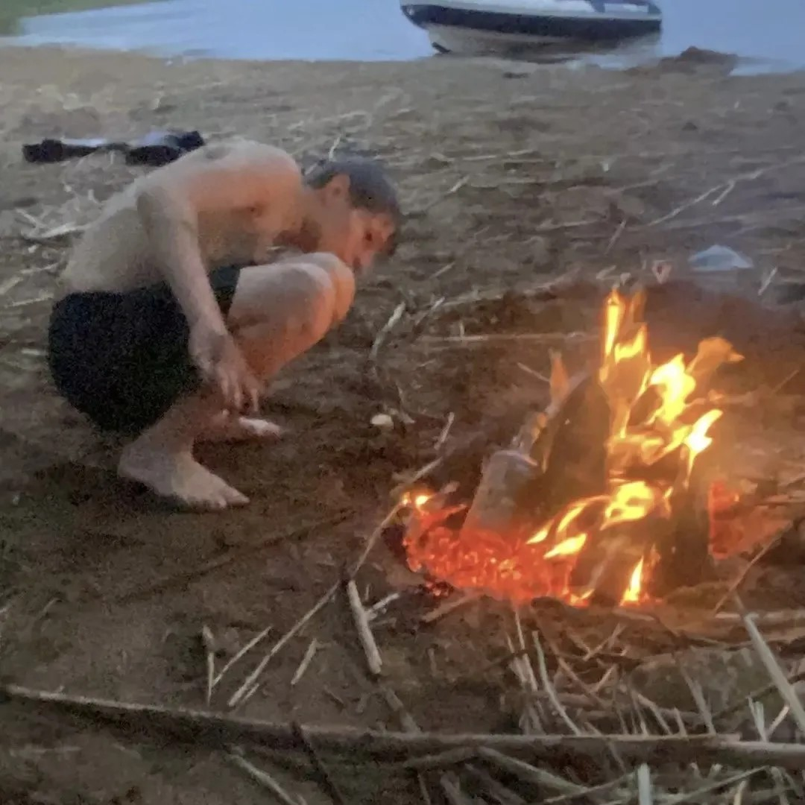
Арс просто залез на дерево и ищет там пакетик
Не найдя сокровища в огне, Арс полез на ближайшее дерево. Сверху доносилось бормотание: «Где же ты, родной?» — и шуршание листьев. Пакетик, увы, не нашёлся.
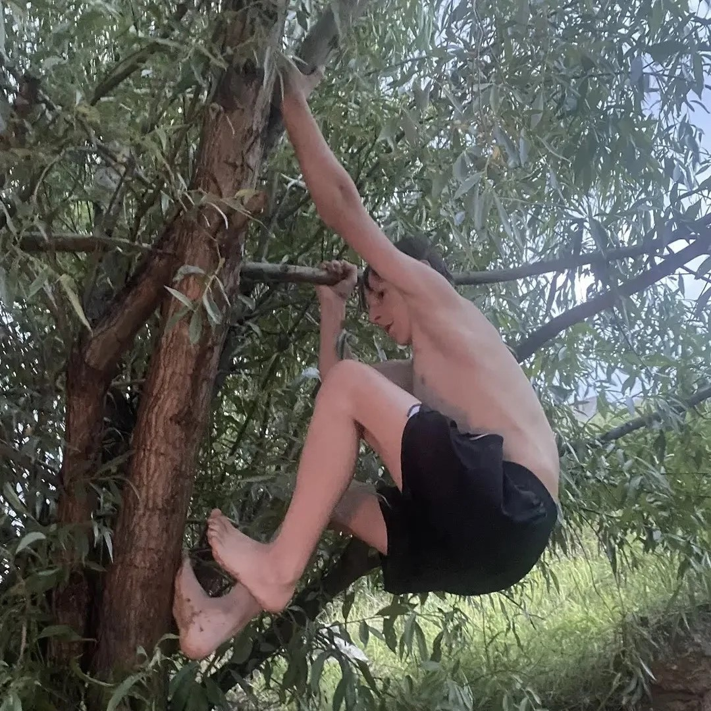
Арс заподозрил своего друга по кличке Капибара в краже века
Следующая остановка — трусы друга Капибары. Арс с горящими глазами обыскивал беднягу, утверждая, что тот «слишком довольно выглядит, чтобы быть честным». Капибара (друг) невозмутимо жевал травинку и делал вид, что это не его уровень драмы.
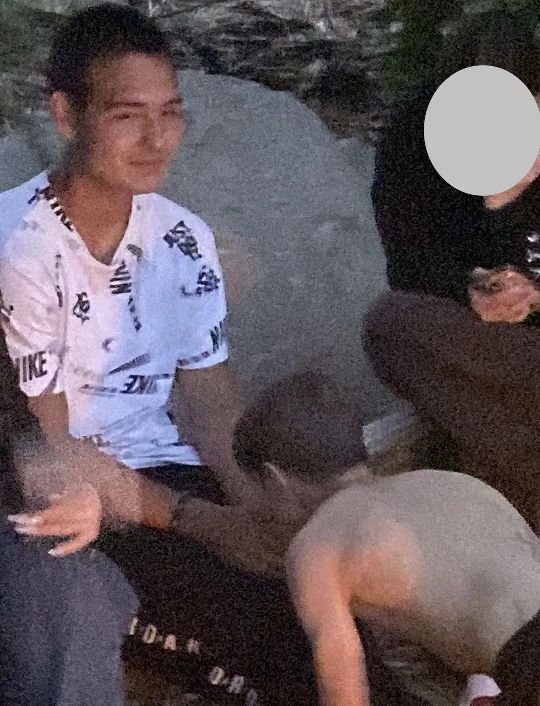
Арс делит бревно с неандертальцем
На пляже разгорелся исторический конфликт: Арс встретил местного жителя, который, по его мнению, «слишком похож на древнего человека», и начал делить с ним то самое бревно (свою «Марину»). «Это моё бревно! Я его первым увидел!» — доказывал Арс, пока «неандерталец» просто пытался пожарить рыбу.
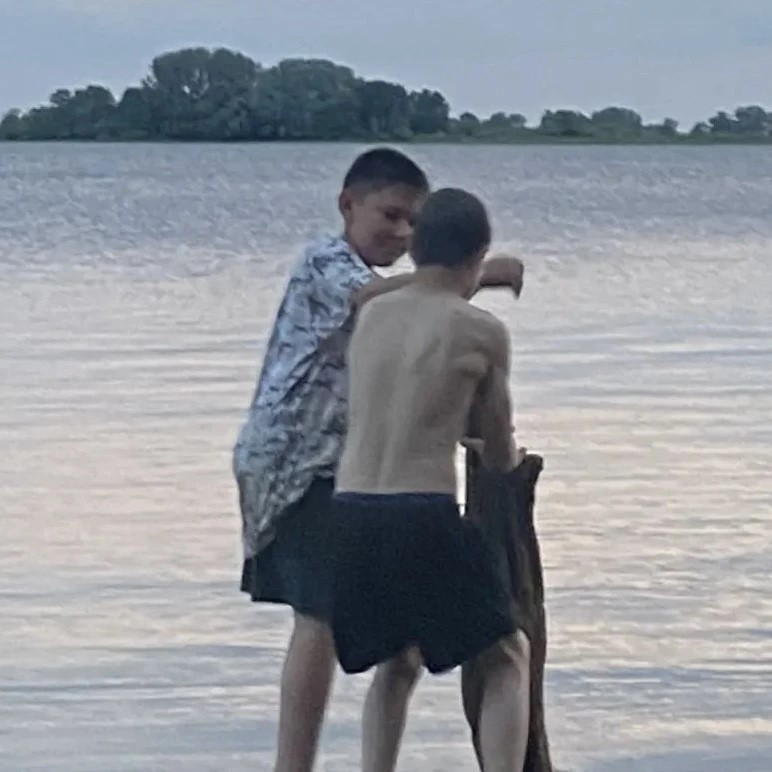
Арс доебался до мимо проходящего человека
Он остановил случайного прохожего с вопросом: «Ты точно не знаешь, где мой пакетик?» Мимо проходящий ничего не знал, пожал плечами и пошёл дальше, оставив Арса в ещё более глубокой паранойе.
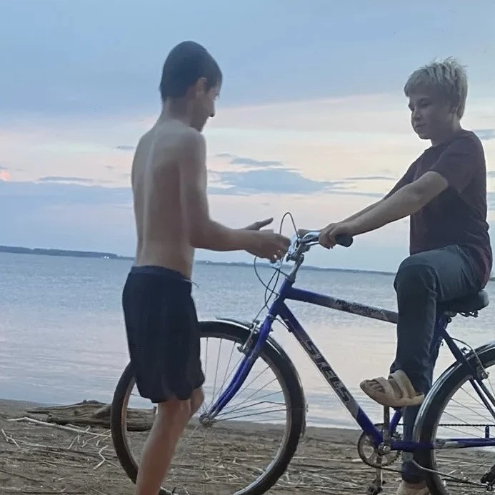
Арс строит ПВО из стеклянной бутылки и костра
Арс в ярости: аборигены продают меф по ценам, которые бьют все рекорды инфляции! «Это грабёж среди бела дня!» — кричит он, сооружая систему ПВО из стеклянной бутылки и костра — при нагревании пробка выстреливает, символически сбивая «вражеские» лодки с завышенными прайсами. Весь остров теперь похож на полигон для запуска шампанского.
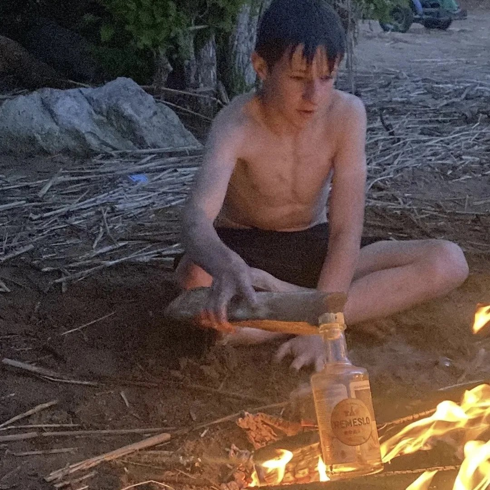
Адель показывает рыбу, которую не поймал
Адель разводит руками: «Вот такая была!» — и тут же вздыхает: «Но сорвалась, зараза, и уплыла в открытое море». Теперь он показывает только воздух, но уверяет, что рыба была размером с его руку.
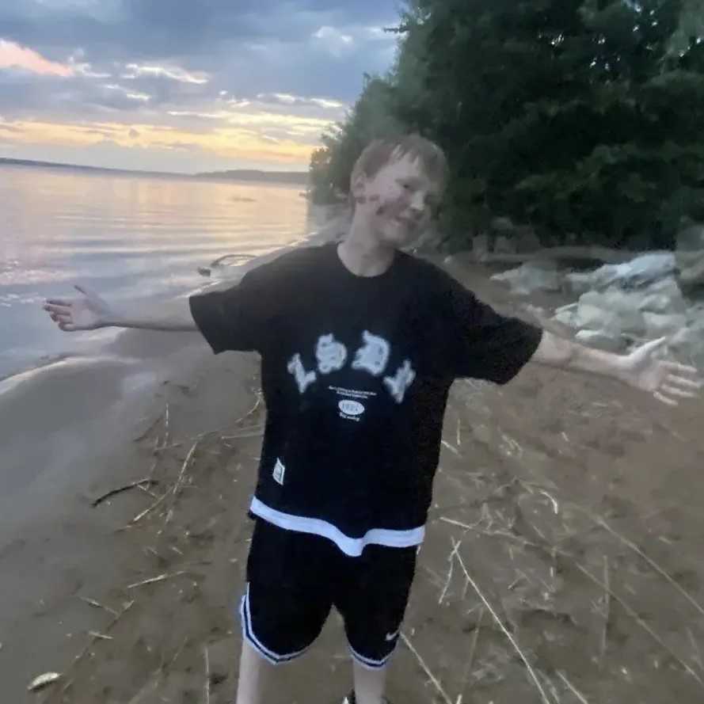
Капибара сияет: он получил зарплату и не потратил ни копейки на пиво
Единственный адекватный персонаж на острове — друг Капибара. Он получил зарплату, не купил ни одной бутылки пива и теперь просто сидит и улыбается, наблюдая за цирком, который устроил Арс. «Деньги — это просто бумажки», — философски замечает Капибара, похлопывая себя по карману.
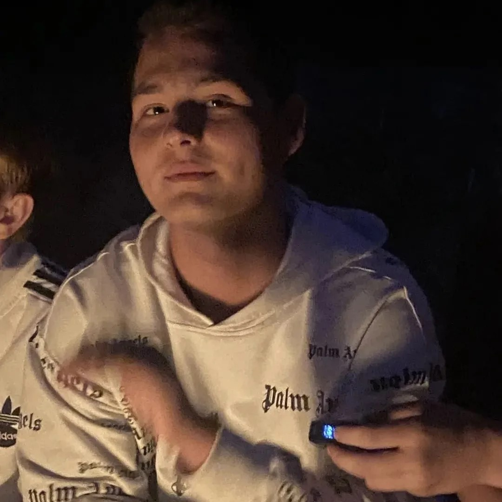
Артем сидел в гараже на своем гелике
Спустя более 10 месяцев ада, сварки и бессонных ночей Артем наконец-то сидел в гараже на своём гелике — никуда не выезжая, просто сидел и наслаждался моментом.
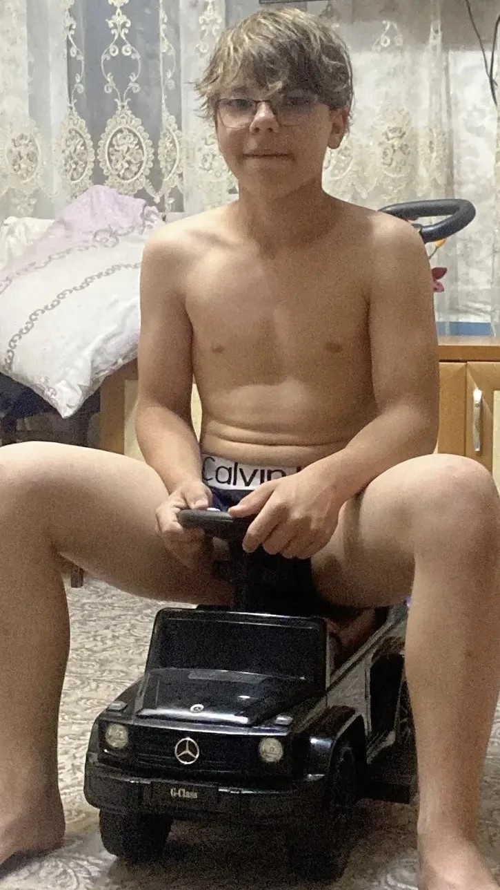